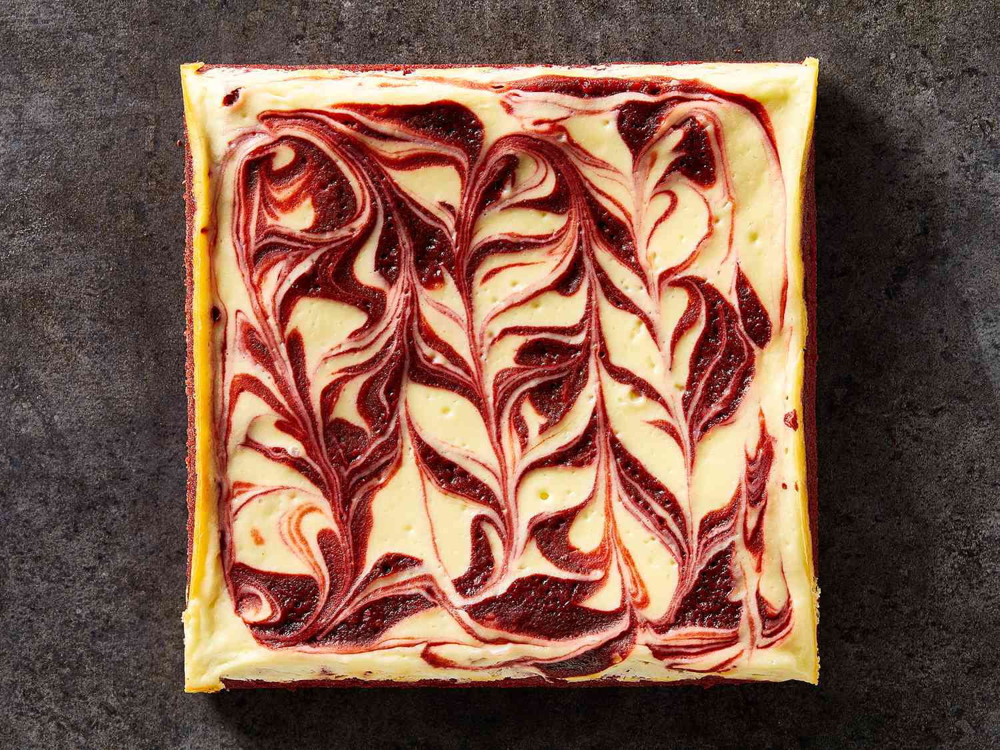

Red Velvet Cheesecake Brownies
Home

These beautiful red velvet cheesecake brownies are moist and delicious with a swirl of decadent cheesecake batter! Perfect for red velvet cake lovers; adds a different twist to the traditional cake. A great dessert for Valentine's Day and can be made ahead.
Ingredients
- Sugar
- Butter
- Cocoa power
- Food colouring
- Vanilla
- Vinegar
- Salt
- Eggs
- Flour
- Cream cheese
Steps
- Make the brownie batter according to the recipe.
- Set aside ¼ cup of batter, then pour the rest of the batter into a prepared baking dish.
- Make the cream cheese filling according to the recipe.
- Dollop the filling over the batter. Drizzle the reserved batter over the dollops.
- Drag a knife or skewer through the batter and filling to create swirls.
- Bake the brownies, cool, and cut into pieces.